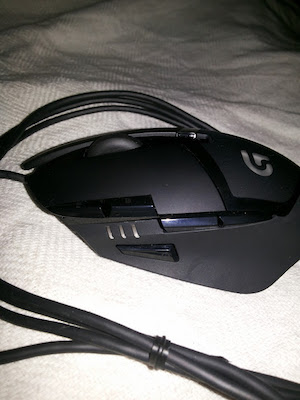
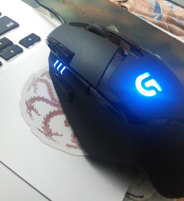
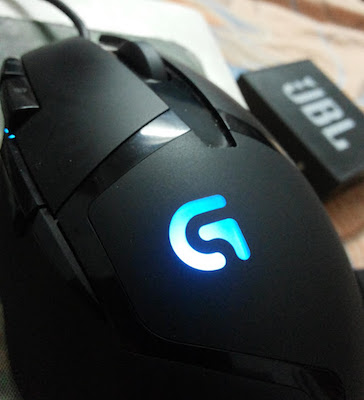

Logitech G402 HyperionFury FPS Gaming Mouse
TL;DR: Great mouse at a great price.
TL;DR: Great mouse at a great price.
Being an avid Counter-Strike gamer, there was only so long I could keep playing with an everyday laptop mouse from Microsoft. Not that it wasn’t a good mouse, it was one of the good ones I’ve used; but after using it for over three years, I decided that it was time to get a new (better?) mouse for my gaming purposes.
After a lot of searching through the internet, balancing out features, reliability, brand-comfort and price point, I decided to go for the Logitech G402 HyperionFury FPS Gaming mouse. A decision that I don’t regret one bit.
The Logitech G402 HyperionFury has a appealing plastic body. The scroll wheel, and the sides where the thumb and the non-clicking fingers rest feel rubberised, which is good for grip, in my opinion.
Overall, the mouse feels sturdy and well-built. The body mostly has a matte finish which gives it a premium and easy on the eyes look.
The Hyperion Fury has a pretty long USB cable to plug it in. It’s too long for use with a laptop, but it’ll be useful if you need to plug it into a desktop USB port. Not being braided, the cable does get entangled, and it does have a bit of friction on the surface, but nothing that annoys me. Then again, if you’re a professional gamer, or planning on becoming one, this might be something to consider.
There are a total of 8 buttons on the mouse, which can be configured within the accompanying software from Logitech’s support site.
If you have small/medium sized hands like I do, it’ll take some time to get used to reaching the side buttons quickly with your thumb, but they’re dead useful when properly programmed for the game you’re playing.
For Counter-Strike, I programmed the DPI-shift button to he_grenade, the up button to flashing, the down button to smoke grenade. I left the DPI adjustment buttons, because I change DPIs quite a bit when I switch from the parallels VM to the host Mac OS X environment.
I also configured the scroll button click to reloading my weapons, just because I can.
The left and right click buttons are sensitive enough to click through with low pressure and at a high speed. Also, you can press the buttons anywhere from the tip to the end and they’ll detect the click absolutely every time, which is pretty damn amazing.
On the left side of the mouse you’ll notice a set of DPI indicator lights, that can be set to always on and only on while adjusting DPIs if you dislike them. I leave them always on because it just looks better to me that way.
On the back of the mouse, there is the G logo from Logitech which lights up when you connect the mouse. You can adjust brightness for the lights and set the G logo to constantly on or a regular breathing effect, whatever you prefer.
I would’ve liked the ability to set it to a custom colour, (I like black and red), but blue doesn’t look too bad.
Strictly speaking, you can use the mouse even without downloading the Logitech Gaming Software, but if you want to have access to all of the features (and that includes the ability to custom program the buttons), then you have to download it.
It’s available for both Mac OS X and Windows and provides you with the ability to customise pretty much everything on the mouse from using computer stored profiles for the mouse vs on board memory profiles, button configuration and light configuration.
It even allows to record a heat map showing distribution of the frequency of button clicks.
In my opinion and use of the Logitech G402 Hyperion Fury, I think it’s an amazing mouse, especially for (you guessed it) FPS gamers. The fact that the mouse can go as low as 240dpi to as high as 4000dpi is nice, too, and programmable buttons never hurt anyone.
At Rs 2800 (I got it at Rs 2100) the Logitech G402 is a good deal. If you have some extra cash, though, you could go for the G502 which even has adjustable weights among other improvements, so yeah.